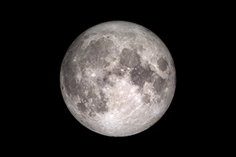

Modelo à escala 1 : 831 000 000 nas distâncias e nas dimensões dos principais astros do Sistema Solar.
O Sol, localizado no CEIA - Centro de Educação e Interpretação Ambiental da Paisagem Protegida de Corno de Bico, tem 170 cm de diâmetro e os planetas à escala estão distribuídos ao longo de um trilho com cerca de 8,6 km.
O Sol é a estrela central do Sistema Solar. Todos os outros corpos do Sistema Solar, como planetas, planetas anões, asteroides, cometas e poeira, bem como todos os satélites associados a estes corpos, giram ao seu redor. Responsável por 99,86% da massa do Sistema Solar, o Sol possui uma massa 332 900 vezes maior que a da Terra, um diâmetro 109 vezes superior ao da Terra e um volume 1 300 000 vezes maior que o do nosso planeta.
Apesar de todos os outros corpos do Sistema Solar estarem a girar em seu redor, o Sol também gira em redor do centro da nossa galáxia - a Via Láctea. São precisos 225 milhões de anos para que o Sol complete uma órbita e já o fez cerca de 20 vezes desde que se formou há cerca de 4,6 mil milhões de anos.
GPS: 41.91345, -8.49245 / N 41° 54.807, W 8° 29.547'
Apesar das semelhanças com a Lua, Mercúrio tem um chão muito mais escuro, devido ao pó de grafite que cobre a superfície. Em Mercúrio a grafite existe em percentagens superiores às encontradas na Terra, Marte, ou na Lua.
A explicação mais aceite para a presença deste material aponta para que, há 4,5 mil milhões de anos, quando o planeta era ainda uma bola de magma, a maior parte dos minerais cristalizou e afundou, enquanto a grafite terá flutuado para a superfície.
GPS: 41.91289, -8.49269 / N 41° 54.773', W 8° 29.561'
Quando observadas na banda dos ultravioleta, são perfeitamente visíveis as nuvens que cobrem completamente o planeta Vénus, e que impedem a observação direta da superfície deste planeta.
Só através de observações por radar, como as efetuadas pela sonda Magalhães, foi possível penetrar nessa camada de nuvens, e revelar o terreno. A espessa atmosfera de Vénus é responsável pelo efeito de estufa descontrolado, que o torna no planeta mais quente do Sistema Solar.
GPS: 41.91285, -8.49376 / N 41° 54.771', W 8° 29.626'
A Terra é o único planeta do Sistema Solar com água líquida na sua superfície, água esta que cobre mais de 70% da superfície do nosso planeta.
No entanto, 97% da água no nosso planeta é água salgada, com apenas 3% de água doce; desta, cerca de 69% (ou pouco mais de 1,7% da totalidade da água do planeta) está sob a forma de gelo, nas calotas polares e nos glaciares, enquanto 30% está no subsolo.
GPS: 41.91262, -8.49423 / N 41° 54.757', W 8° 29.654'
A Lua, o nosso satélite natural, foi até agora o único corpo celeste alguma vez visitado por seres humanos. Visto da Terra apresenta manchas escuras, conhecidas por Mares, que durante milénios a humanidade julgou estarem cheios de água líquida. Na realidade, são zonas compostas por basaltos, que se formaram por arrefecimento rápido de lava.
Os Mares são exclusivos do lado visível, não existindo no lado oculto da Lua.
GPS: 41.91262, -8.49423 / N 41° 54.757', W 8° 29.654'
O planeta Marte é o lar de algumas das maiores estruturas geológicas do Sistema Solar. O Vale dos Marinheiros (Valles Marineris) é um desfiladeiro com cerca de 3000 quilómetros de extensão, tem zonas que chegam aos 9 quilómetros de profundidade, e margens que estão a 100 quilómetros uma da outra.
Também a maior montanha vulcânica do Sistema Solar fica em Marte – O Monte Olimpo, com 3 vezes a altitude do Everest, e uma área da base semelhante a toda a Península Ibérica.
GPS: 41.91214, -8.49513 / N 41° 54.728', W 8° 29.708'
Ceres é um planeta anão que se encontra na cintura de asteroides, entre Marte e Júpiter. Foi descoberto dia 1 de Janeiro de 1801 por Giuseppe Piazzi, no entanto já tinha sido previsto por Johann Bode em 1772.
A sua atmosfera é muito ténue, formada principalmente por vapor de água que sublima e deixa a superfície. É constituído essencialmente por rocha e gelo e possui muitas crateras de baixo-relevo na sua superfície. Ceres foi o primeiro objeto a ser considerado um asteroide. Em 2006 juntamente com Plutão integrou a categoria de planeta anão, sendo o mais pequeno deles todos.
GPS: 41.91041, -8.4968 / N 41° 54.625', W 8° 29.808'
Júpiter é o maior planeta do Sistema Solar, com 11 vezes o diâmetro da Terra. Assim, em volume, caberiam dentro de Júpiter cerca de 1330 Terras.
Este planeta é um gigante gasoso, com tempestades que ultrapassam os 500 km/h. Uma das características mais reconhecidas deste planeta é a Grande Mancha Vermelha, um anticiclone com mais de 300 anos. Tem mais de 75 luas conhecidas, tendo as quatro maiores sido descobertas por Galileu Galilei em 1609.
GPS: 41.90679, -8.49919 / N 41° 54.407', W 8° 29.951'
Saturno é famoso devido aos seus anéis, mas estes não são, como aparentam à primeira vista, anéis perfeitos. Na realidade são milhões de blocos de gelo, que podem medir entre alguns centímetros e vários quilómetros. Como o gelo reflete muito bem a luz do sol, para os ver da Terra, basta um instrumento que aumente cerca de 30 vezes a imagem. Tem mais de 80 luas conhecidas.
Este planeta é também muito pouco denso – se fosse possível colocar Saturno num recipiente com água, este iria flutuar.
GPS: 41.89933, -8.50151 / N 41° 53.960', W 8° 30.091'
À semelhança dos gigantes gasosos, também os gigantes gelados têm anéis, tempestades violentas e furacões, que no caso de Urano, excedem os 1000 km/h. Os gigantes gelados têm uma atmosfera superior de hidrogénio, semelhante aos gigantes gasosos, mas o seu interior será um "manto" gelado.
A cor de Urano é devida ao terceiro componente mais abundante na sua atmosfera, o gelo de Metano.
GPS: 41.88403, -8.50559 / N 41° 53.042', W 8° 30.335'
Neptuno foi o único planeta do Sistema Solar cuja existência foi prevista através de cálculos matemáticos, por Urbain Le Verrier, que guiaram o alemão Johann Gottfried Galle à sua descoberta, em 1846.
Apesar de ser mais pequeno que Urano, é mais massivo (e portanto mais denso) que o outro gigante gelado do Sistema Solar. É também em Neptuno que encontramos as mais violentas tempestades do Sistema Solar, com ventos que ultrapassam os 2000 km/h.
GPS: 41.86745, -8.51819 / N 41° 52.047', W 8° 31.091'